OSのコンセプトを決める
まずはOSのコンセプトを考えます。
- 軽量なOS
- 自由度の高いOS
- 初心者向けなOS
- Windowsからの移行を狙ったOS
「自分専用のOS」というのもありですね♪。
SereneLinuxでは、『軽量で美しくわかりやすいUI』をコンセプトに開発を進めています。
開発環境を準備する。
実際に開発を行っていく際に必要な物を準備します。
必要なものは
- 開発用の高性能なパソコン
- データを保存する大容量のHDD
- ベースになるOSのISOイメージ
- 仮想化ソフトウェア
- 実験用のDVD-RW
- 定期的に更新していく時間（配布用のものを作成する場合のみ）
- LinuxをGUIである程度カスタマイズできる能力（これから学ぶこともできます）
- 問題があったときに自分で検索したり、コミュニティに質問したりできる能力
一つずつ見ていきましょう。
開発用の高性能なパソコンとデータを保存する大容量のHDD
まずは、 開発用の高性能なパソコン と データを保存する大容量のHDD ですが、『高性能』と言うのには理由があります。
それは、主な開発を仮想環境上で行うからです。
仮想環境とはパソコンの中に仮想的に作られた環境のことを指します。
あくまで『仮想』なのでバックアップや性能の上げ下げを簡単に行うことができ、 容量が許す限り 無限に作成できます。
また、過去のバージョンなどを保存するためにもたくさんの容量が必要です。
っと、HDDがたくさん必要な方法はわかったと思いますが、高性能なパソコンが必要な理由がまだでしたね。
仮想環境ではパソコンの中にパソコンを作るわけです。（細かい仕組みは違いますが）なのでその仮想的なパソコンの分までをカバーする性能が必要です。
なので高性能なパソコンが必要になります。
SereneLinuxの開発に使われているPCの性能
余談ですが、参考としてSereneLinuxの開発に使われている筆者のメインPCを紹介します。
このPCは7~8年前の古いPCですが現役でバリバリ動作しています。
CPU：Xeon E3-1275 3.4GHz
RAM：DDR3-12800 4GB x 2
GPU：NVIDIA GeForce GTX 645
SSD：SPCC SSD 239GB
OS：Windows 10 19H1 Insider Preview Pro 64bit
ベースになるOSのISOイメージ
次にソフトウェア面を準備していきます。
難しいように見えますが簡単です。
まず、ベースとなるOSのISOイメージです
ベースになるISOイメージを準備するにはベースになるOSを決める必要があります。
ベースのOSを決めよう。
ベースになるOSはUbuntu系が簡単でおすすめです（というかUbuntu系以外はこのサイトの方法ではできません）。
UbuntuのISOを直接改変してもいいですが、余分なソフトが多く含まれており自分のOSも重くなってしまいます。
逆に、MinimalISOという超最低限のUbuntuから作成してもいいですが、設定系のソフトウェアが一切入っていないので自分で調べて入れる必要があります。（入れなくてもいいですが、ユーザにとっては非常に面倒です。）
じゃあどれを使えばいいの？
そこで、日本人の方が作成した「OS作成用のOS」があります。
そのOSは Basix と言い、日本のLinux界隈で有名な ライブCDの部屋 の管理人さんが作成、公開しています。
ISOのダウンロード先は こちら です。
今回はbasix-4.0_x86_64.isoを利用して作成していきます。（SereneLinuxもこれで作成されています。）
このDLしたISOは削除せずにとっておいてください。
仮想化ソフトウェア
また難しそうな名前が出てきました。
これも簡単なので大丈夫です。
今回は仮想化ソフトウェアとしてオープンソース（ソフトウェアの中身が公開されていること）で開発されているOracle製の VirtualBox を利用していきます。
仮想化ソフトウェアには他にもVMware Workstation PlayerやHyper-V、QEMUなどがあります。
（自分のお気に入りの仮想化ソフトウェアがあるならそちらを使っていただいて結構です。）
ダウンロード
こちら からダウンロードします。
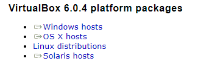
Windowsを使っている人はWindows hostsから、macOSの方はOS X hostsからダウンロードしてください。
Linuxを使っている方はそれぞれのディストリビューションのパッケージ管理システムからインストールしてください。
Ubuntu系なら
$ sudo apt-get -y install virtualboxでインストールできます。
ダウンロード後はWindowsの場合はそのままウィザードに沿ってインストールしてください。
macOSのほうはわかりません。（環境がないので） すみませんm(_ _)m
エクステンションパックの導入
カタカナが並んでいますが、すぐに終わります。
先程のサイト の下にある
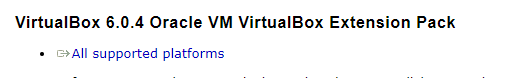
からダウンロードしてください。
こちらはWindowsとかMacとか関係ないです。
ダウンロード後はそこままダウンロードしたファイルをVirtualBoxで読み込んで完了です。
確認
メニューからVirtualBoxを選んで、以下の画面が起動すればインストール完了です。
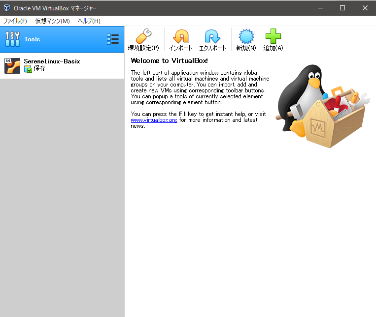
これで仮想化ソフトウェアの準備も完了です。
実験用のDVD-RW
作成したISOイメージを実際に書き込んで起動するかどうかのチェックに使用します。
仮想環境だけではチェックできないドライバ（マウスなどの周辺機器を使うためのソフトウェア）の問題などの確認に使用します。
DVD-Rだと繰り返し使用できないのでDVD-RWを選んでください。
100円ショップで買えます。
定期的に更新していく時間
自分専用なら必要ないですね。
Ubuntuは年に2回アップデート版がリリースされます。
そのたびに自分のOSも更新させる必要があります。
しかし、実際のところは2年に1回リリースされる長期サポート版（LTS版）でのみ更新するディストリビューションがほとんどです。
実際にベースにするBasixも2年に1回の更新になります。
なので、2年に1回だけ開発の時間が確保できればOKです。
LinuxをGUIである程度カスタマイズできる能力
Linuxをカスタマイズするので必須ですね。
自分で設定を変更したり、アイコンやテーマを変更します。
これに関してはそれぞれによって違いがあるので各自で調べてください。
どうしてもわからなければ 作者のTwitter のDMまで来てください。
問題があったときに自分で検索したり、コミュニティに質問したりできる能力
これはLinux共通です。
上と関連していますが、Linuxはフリーであるがゆえにサポートもありません。
TwitterやYahoo知恵袋などで誰かに質問するか、自力でググることが大切です 。
どうしてもわからなかったら日本のコミュニティに質問することもできますが、ISO作成などは情報が少ないため知っている人も殆どいません。
場合によっては英語のサイトを参考にすることもあります（Google翻訳は便利ですがプログラムのコードが変なふうに空白が空いたりしてしまうこともあるので注意してください。）
仮想環境にBasixをインストールする
先程インストールしたVirtualBoxにBasixをインストールしていきます。
仮想マシンを作成す る
- VirtualBOxを起動して「新規」をクリック。
- 下の画面で名前を自分の好きに打ち、タイプをLinux、バージョンをUbuntu（64bit）にする。
- 次へをクリックして、メモリサイズを自分のパソコンの半分を割り当てる。（自分のパソコンのメモリサイズはタスクマネージャで確認。）
- そのまま作成をクリック。
- そのまま次へをクリック。
- そのまま次へをクリック。
- 右のボックスに「32GB」と入力して、作成をクリック。
- 「設定」をクリック。
- システム→プロセッサーと移動してプロセッサー数を警告が出るギリギリまで上げる 。
- PAE/NXの有効化にチェックを入れる。
- ディスプレイに移動後、ビデオメモリーを128mbに設定し、3Dアクセラレーションを有効化にチェックを入れる。
- 設定を閉じて、[光学ドライブ]をクリック。
- ディスクイメージを選択→ダウンロードしたBasixのISOを選択→開く。
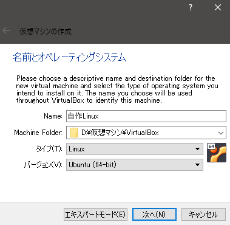
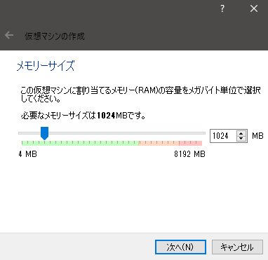
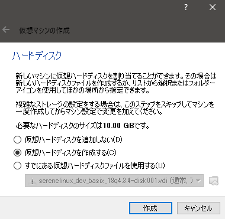
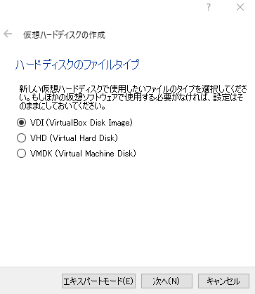
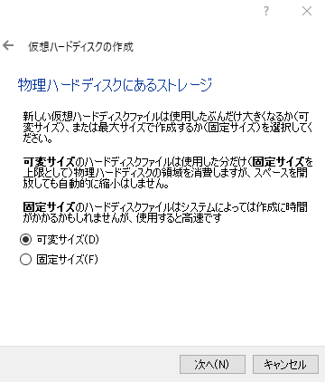
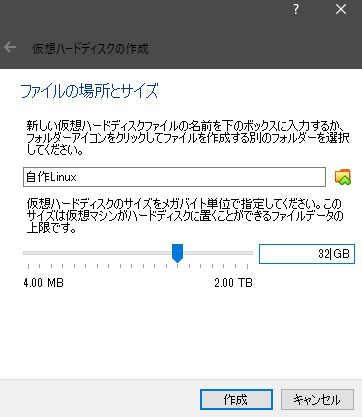
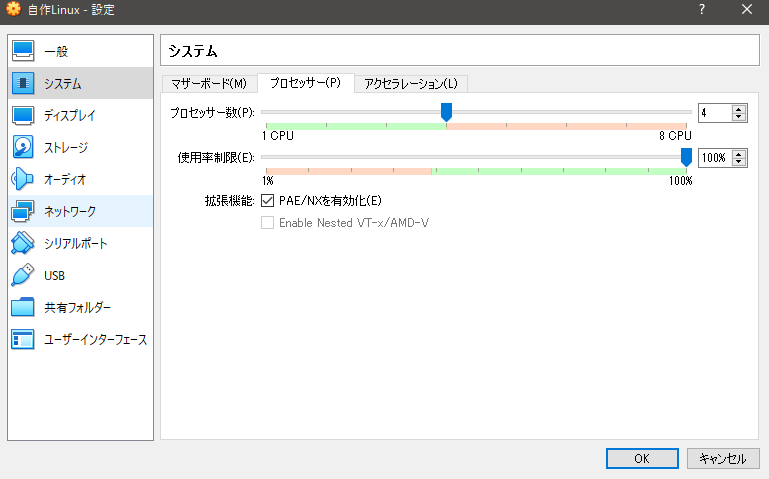
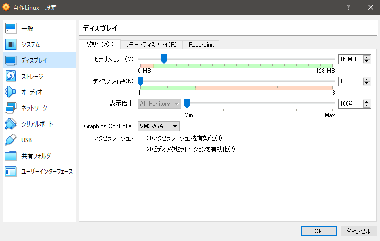
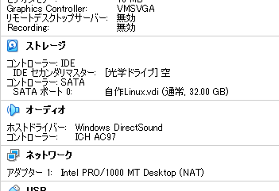
Basixをインストールする
- 「起動」ボタンを押して起動する。
- メニューが出たら一番上を選択する。
- 「Basix 4.0をインストールする」をダブルクリックしてインストーラを起動する。
- 「続ける」をクリック。
- キーボードが打てることを確認して「続ける」をクリック。
- 「グラフィックスとWi-Fiハードウェアと追加のメディアフォーマットのサードパーティ製ソフトウェアをインストールする」にチェックを入れて「次へ」をクリック。
- 何も変更せずに「インストール」をクリック。
- しばらく時間がかかるので待つ。
- そのまま「続ける」をクリック。（北海道に住んでいようが沖縄に住んでいようが東京を選んでください。）
- たまにここでフリーズっぽくなるのですが、放置して大丈夫。
- あなたの名前の部分にディストリビューションの簡易名を（SereneLinuxではserene。）入力。
- コンピュータの名前に簡易名+「-PC」と入力。（SereneLinuxではSerene-PC。）
- パスワードに自分のパスワードを入力。
- 同じパスワードを下にも入力。
- 「自動的にログインする」にチェックを入れる。
- しばらく放置。
- 「今すぐ再起動する」をクリックして再起動
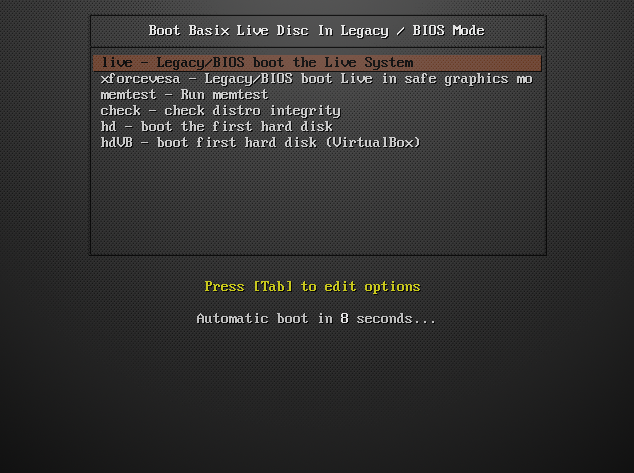
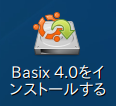
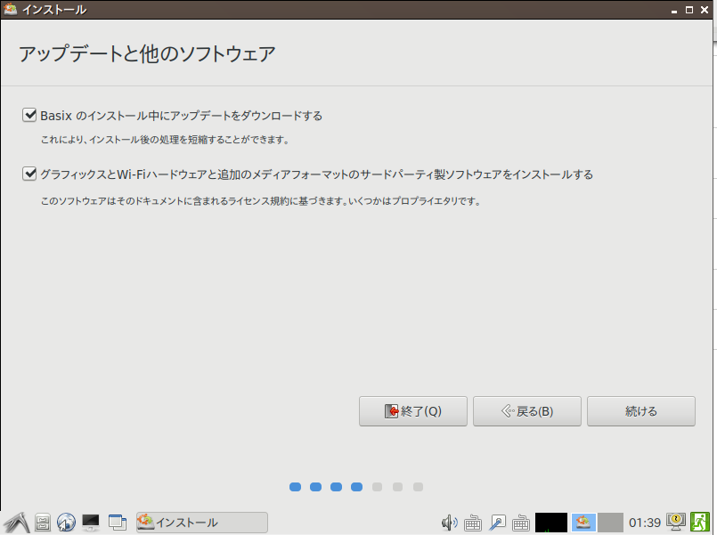
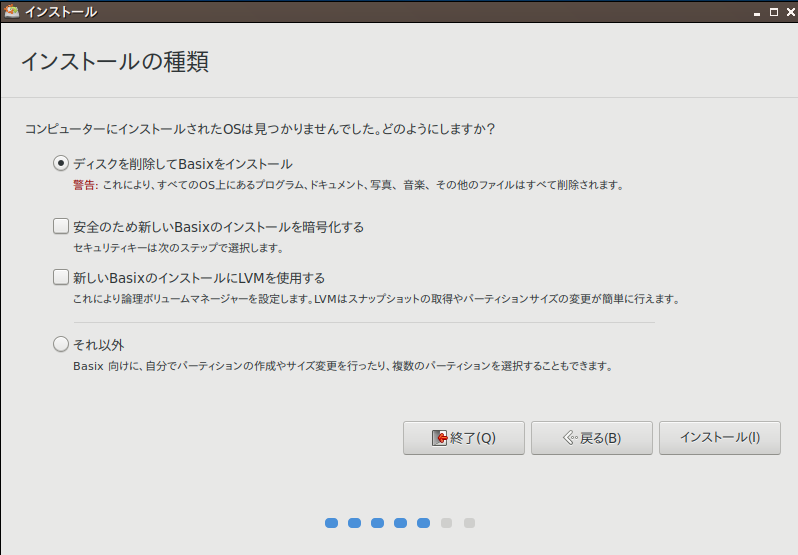
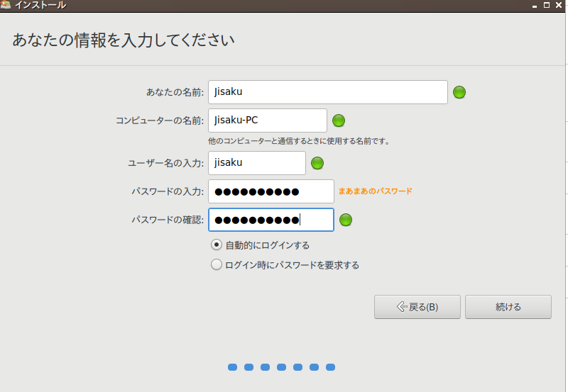
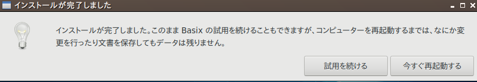
次回へ続く
本当は1ページで終わらせたかったのですが、あまりにも長くなりそうなので次回へ続けたいと思います。
作者のTwitter をフォローしてくれるととても喜びます。（宣伝は忘れない。）